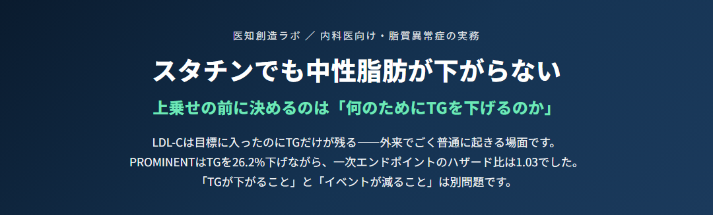

スタチンでも中性脂肪が下がらない｜上乗せの前に決めるのは「何のためにTGを下げるのか」
スタチンでLDL-Cは目標に入ったのにTGだけが残る——ペマフィブラート上乗せの判断を、一次資料の数値だけで整理した内科医向けの図。PROMINENTはTGを26.2%下げ、レムナントC・apoC-IIIも下げながら、apoBだけが4.8%上昇し一次エンドポイントのハザード比は1.03（95%CI 0.91–1.15）だった。上乗せの前に採血条件（空腹時TG 150／随時175）・二次性高TG血症・スタチン自体のTG低下能（10〜20%）を順に潰し、目的が急性膵炎の予防（TG 500以上）かASCVD残余リスクの低減（TG 150〜499）かを宣言する。2018年10月と2022年10月12日付通知による「併用禁忌」二段階解除の正確な射程、腎機能別の製剤選択、ACCORD-Lipidが示した「実害は筋より腎」（eGFR低下による減量 15.9% vs 7.0%／CK 10×ULN超は 0.4% vs 0.3%）、上がったクレアチニンの扱いとシスタチンCで判別できない理由、イコサペント酸エチルを先に置く根拠と心房細動という代償まで。